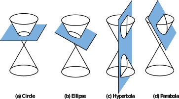

The graph of any first-degree equation in two variables,
\begin{gather*}
Ax + By = C
\end{gather*}
is a line (as long as \(A\) and \(B\) are not both 0). A second-degree equation in two variables has the general form
\begin{gather*}
Ax^2 + Bxy + Cy^2 + Dx + Ey + F = 0
\end{gather*}
where \(A\text{,}\) \(B\text{,}\) and \(C\) cannot all be zero (because in that case the equation would not be second degree). The graphs of such equations are curves called conic sections because they are formed by the intersection of a plane and a cone, as illustrated below. Except for a few special cases called degenerate conics, the conic sections fall into four categories called circles, ellipses, hyperbolas, and parabolas.

Conic sections whose centers (or vertices, in the case of parabolas) are located at the origin are called central conics.
Subsection 9.3.1 Circles and Ellipses
The circle is the most familiar of the conic sections. Recall that the standard equation for a circle of radius, \(r\text{,}\) centered at the point \((h,k)\) is:
\begin{equation*}
(x-h)^2 + (y-k)^2 = r^2
\end{equation*}
and a circle whose center is the origin has equation
\begin{equation*}
x^2 + y^2 = r^2
\end{equation*}
If we divide through by \(r^2\text{,}\) we can also write this equation in the form
\begin{equation*}
\frac{x^2}{r^2}+\frac{y^2}{r^2}=1
\end{equation*}
Notice that the denominators of both the \(x^2\)- and \(y^2\) -terms are \(r^2\text{.}\) You can check that the \(x\)- and \(y\)-intercepts of this circle are \((0, \pm r)\) and \((\pm r, 0)\text{.}\)
If the denominators of the \(x\)-squared and \(y\)-squared terms are not equal, the graph is called an ellipse. An ellipse is an elongated circle, or oval. Ellipses appear in a variety of applications. The orbits of the planets and of satellites about the earth are ellipses. The arches in some bridges are elliptical in shape, and whispering domes, such as the ceiling of the Mormon Tabernacle in Salt Lake City, are made from ellipses.
A circle is defined as the set of all points in a plane that lie at a fixed distance from its center. An ellipse also has a geometric definition.
Definition 9.3.1. Ellipse.
An ellipse is the set of points in the plane, the sum of whose distances from two fixed points (the foci) is a constant.
Using the distance formula and the definition above, we can show that the equation of an ellipse centered at the origin has the following standard form.
Central Ellipse.
The equation of an ellipse centered at the origin is
\begin{equation*}
\blert{\frac{x^2}{a^2}+\frac{y^2}{b^2}=1}
\end{equation*}
By setting \(y\) equal to zero in the equation above, we find that the \(x\)-intercepts of this ellipse are \(a\) and \(-a\text{;}\) by setting \(x\) equal to zero, we find that the \(y\)-intercepts are \(b\) and \(-b\text{.}\)
The line segment that passes through the foci (labeled \(F_1\) and \(F_2\) on the graphs below) and ends on the ellipse is called the major axis. If \(a \gt b\text{,}\) the major axis is horizontal, as shown in the Figure below left. The \(x\)-intercepts are the endpoints of the major axis, so its length is \(2a\text{.}\) The vertical segment with length \(2b\) is called the minor axis. The endpoints of the major axis are the vertices of the ellipse and the endpoints of the minor axis are the covertices.
If \(a \lt b\text{,}\) the major axis is vertical and has length \(2b\text{.}\) In this case the endpoints of the major axis are the \(y\)-intercepts of the ellipse. (See the Figure above right.) The minor axis is horizontal and has length \(2a\text{.}\)
The standard form of the equation for an ellipse gives us enough information to sketch its graph.
Example 9.3.2.
Graph \(~\dfrac{x^2}{8}+\dfrac{y^2}{25}=1 \)
Solution.
The graph is an ellipse with major axis on the \(y\)-axis. Because \(a^2 = 8\) and \(b^2 = 25\text{,}\) the vertices are located at \((0, 5)\) and \((0, -5)\text{,}\) and the covertices lie \(\sqrt{8} \) units to the right and left of the center, or approximately at \((2.8, 0)\) and \((-2.8, 0)\text{.}\)
To sketch the ellipse, we first locate the vertices and covertices. Then we draw a smooth curve through the points. The graph of \(\dfrac{x^2}{8}+\dfrac{y^2}{25}=1 \) is shown below.
Checkpoint 9.3.3. Practice 1.
Checkpoint 9.3.4. QuickCheck 1.
The equation of any central ellipse may be written as
\begin{equation*}
Ax^2+By^2=C
\end{equation*}
where \(A\text{,}\)\(B\text{,}\) and \(C\) the same sign. The features of the graph are easier to identify if we first convert the equation to standard form.
Example 9.3.5.
Graph \(~4x^2 +y^2=12\)
Solution.
First we convert the equation to standard form: we divide through by the constant term, 12, to obtain
\begin{equation*}
\frac{x^2}{3}+\frac{y^2}{12}=1
\end{equation*}
Because \(a^2=3\) and \(b^2=12\text{,}\) the vertices are \((0,\pm 2\sqrt{3}) \) and the covertices are \((\pm \sqrt{3},0) \text{.}\) We plot points at about \((0, \pm 3.5)\) and \((\pm 1.7, 0)\text{,}\) then draw an ellipse through the points, as shown at right.
Checkpoint 9.3.6. Practice 2.
We can find coordinates of other points on an ellipse by substituting a value for one variable and solving for the other variable.
Example 9.3.7.
Find the exact coordinates of any points with \(y\)-coordinate 2 on the ellipse \(~4x^2 + y^2 = 12~\text{.}\) Plot and label those points on the ellipse. \(~\alert{\text{[TK]}}\)
Solve the equation \(~4x^2 + y^2 = 12~\) when \(y = -4\text{.}\) What do the solutions tell you about the graph of the ellipse?
Solution.
-
We substitute \(y = \alert{2}\) into the equation and solve for \(x\text{.}\)
\begin{align*}
4x^2+(\alert{2})^2\amp = 12\\
4x^2\amp = 8\\
x^2\amp = 2\\
x\amp= \pm \sqrt{2}
\end{align*}
There are two points with \(y=2\text{,}\) namely \(\left(\sqrt{2},2\right)\) and \(\left(-\sqrt{2},2\right)\)
We substitute \(y = \alert{-4}\) into the equation and solve for \(x\text{.}\)
\begin{align*}
4x^2+(\alert{-4})^2\amp = 12\\
4x^2\amp = -4\\
x^2\amp = -1
\end{align*}
Because there are no real solutions, there are no points on the ellipse with \(= -4\text{.}\)
Checkpoint 9.3.8. Practice 3.
Subsection 9.3.2 Translated Ellipses
An ellipse whose center is at the point \((h, k)\) instead of the origin is said to be shifted or translated to that location.
Ellipse.
The standard equation for an ellipse centered at \((h,k)\) is
\begin{equation*}
\blert{\dfrac{(x-h)^2}{a^2} + \dfrac{(y-k)^2}{b^2} = 1}
\end{equation*}
The horizontal axis of the ellipse has length \(2a\text{,}\) and the vertical axis has length \(2b\text{,}\) the same as for central ellipses. When \(a \gt b\text{,}\) the major axis is horizontal and the ellipse is short and wide. When \(a \lt b\text{,}\) the major axis is vertical and the ellipse is tall and narrow, as shown below.
Example 9.3.9.
Graph \(~~\dfrac{(x+2)^2}{16} + \dfrac{(y-1)^2}{5} = 1\)
Find the exact coordinates of the intercepts of the graph.
Solution.
-
The graph is an ellipse with center at \((-2,1)\text{.}\) We have \(a=4\) and \(b=\sqrt{5}\text{,}\) and the major axis is parallel to the \(x\)-axis because \(a \gt b\text{.}\) We plot the vertices four units to the left and right of the center, at \((-6,1)\) and \((2,1)\text{.}\) The covertices lie \(\sqrt{5}\) units above and below the center, at approximately \((-2, 3.2)\) and \((-2, -1.2)\text{.}\) The graph is shown below.
-
We set \(y=\alert{0}\) and solve the resulting equation to find the \(x\)-intercepts.
\begin{align*}
\dfrac{(x+2)^2}{16} + \dfrac{(\alert{0}-1)^2}{5} \amp = 1 \amp\amp \blert{\text{Subtract}~ \dfrac{1}{5}~ \text{from both sides.}}\\
\dfrac{(x+2)^2}{16} \amp = \dfrac{4}{5} \amp\amp \blert{\text{Multiply both sides by 16.}}\\
(x+2)^2 \amp = \dfrac{64}{5} \amp\amp \blert{\text{Extract roots.}}\\
x+2 \amp = \pm \sqrt{\dfrac{64}{5}}\\
x \amp = -2 \pm \dfrac{8\sqrt{5}}{5}
\end{align*}
The \(x\)-intercepts are \(\left(-2 \pm \dfrac{8\sqrt{5}}{5}, 0\right)\) or approximately \((1.6,0)\) and \((-5.6,0)\text{.}\) We set \(x=\alert{0}\) to find the \(y\)-intercepts.
\begin{align*}
\dfrac{(\alert{0}+2)^2}{16} + \dfrac{(y-1)^2}{5} \amp = 1 \amp\amp \blert{\text{Subtract}~ \dfrac{1}{4}~ \text{from both sides.}}\\
\dfrac{(y-1)^2}{5} \amp = \dfrac{3}{4} \amp\amp \blert{\text{Multiply both sides by 5.}}\\
(y-1)^2 \amp = \dfrac{15}{4} \amp\amp \blert{\text{Extract roots.}}\\
y-1 \amp = \pm \sqrt{\dfrac{15}{4}}\\
y \amp = 1 \pm \dfrac{\sqrt{15}}{2}
\end{align*}
The \(y\)-intercepts are \(\left(0, 1 \pm \dfrac{\sqrt{15}}{4}\right)\) or approximately \((0, 2.9)\) and \((0, -0.9)\)
Checkpoint 9.3.10. Practice 4.
\(\dfrac{(x-5)^2}{15} + \dfrac{(y+3)^2}{8} = 1\text{:}\)
Checkpoint 9.3.11. QuickCheck 2.